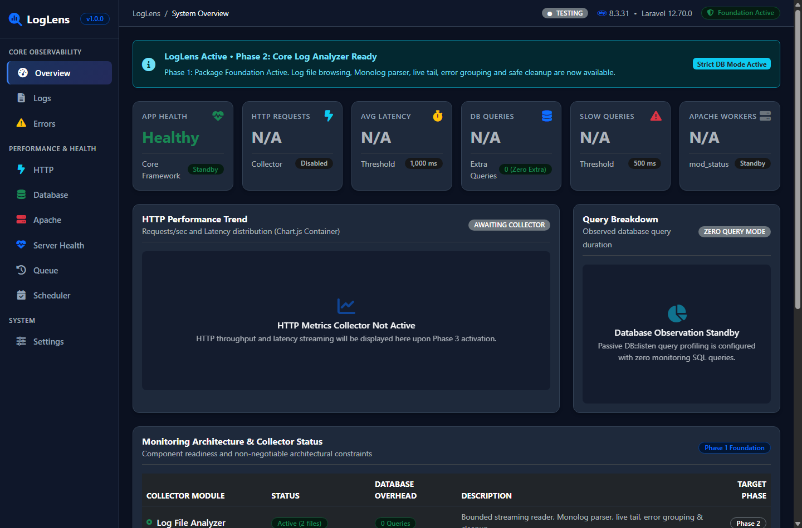
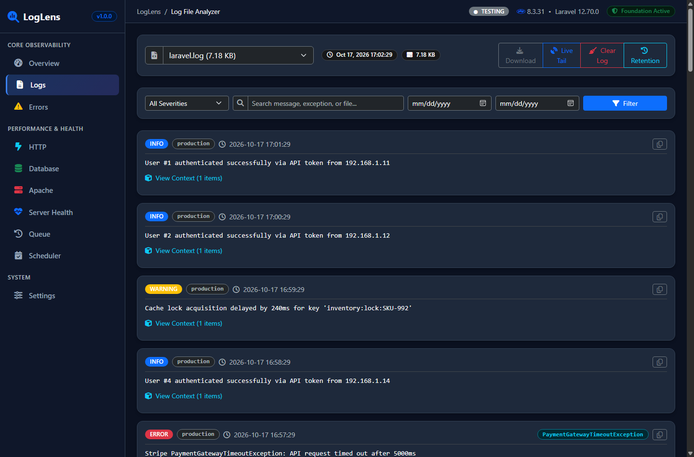
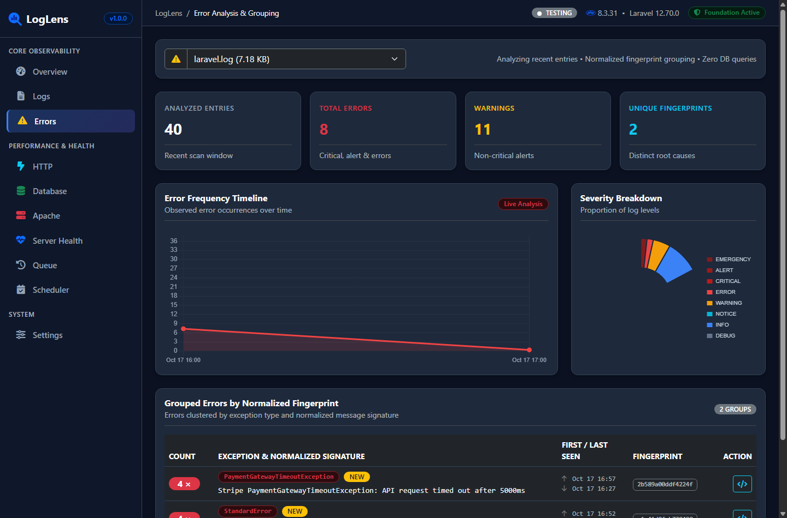
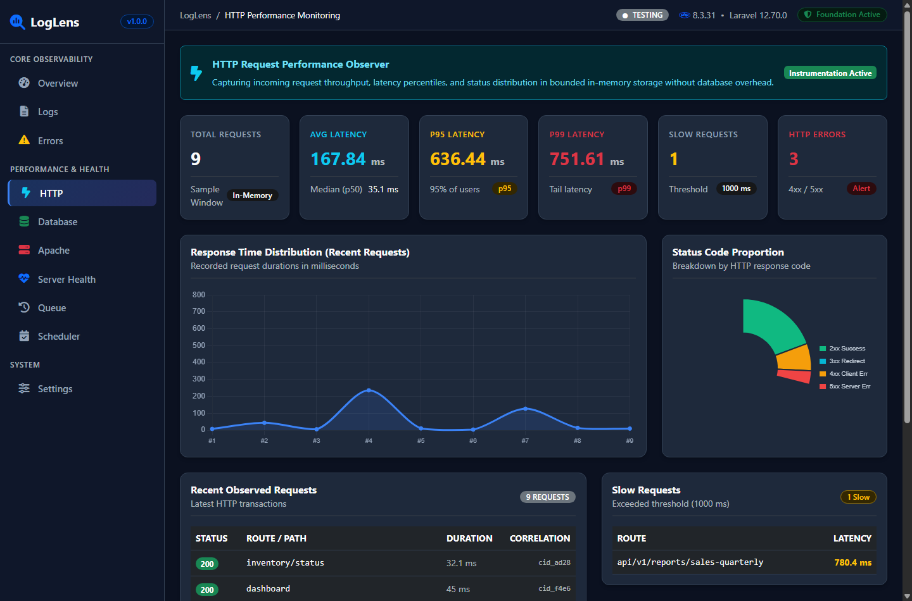
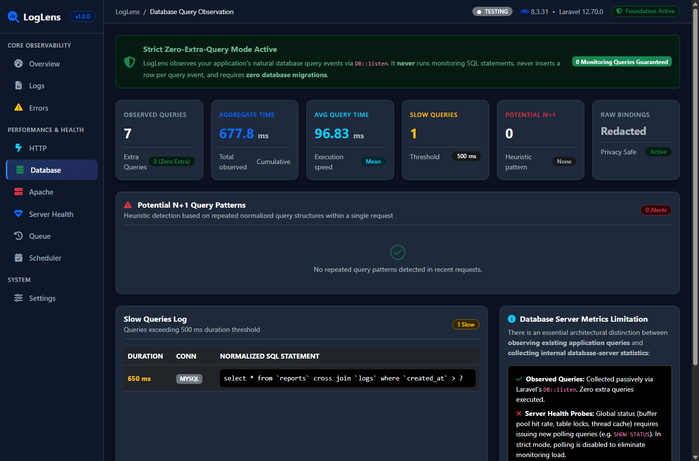
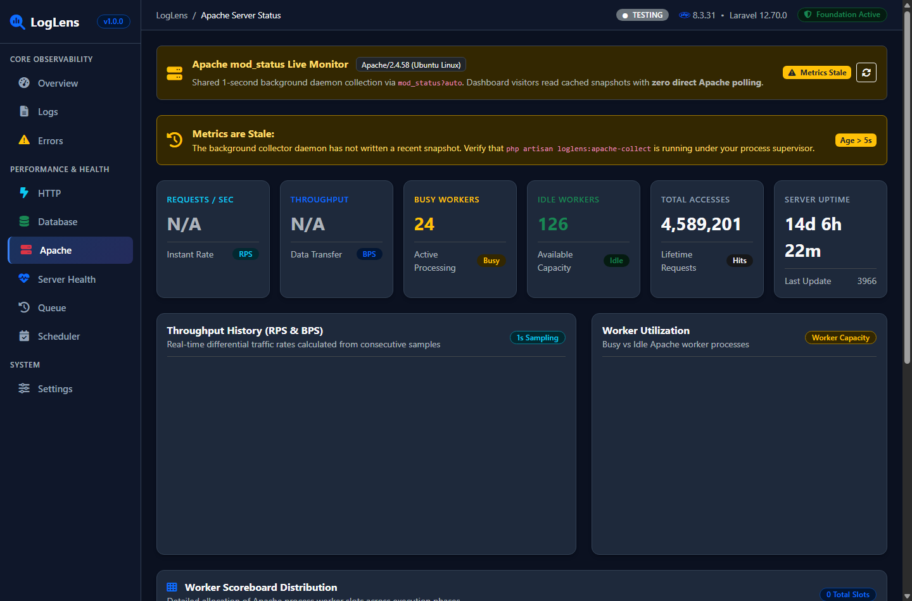
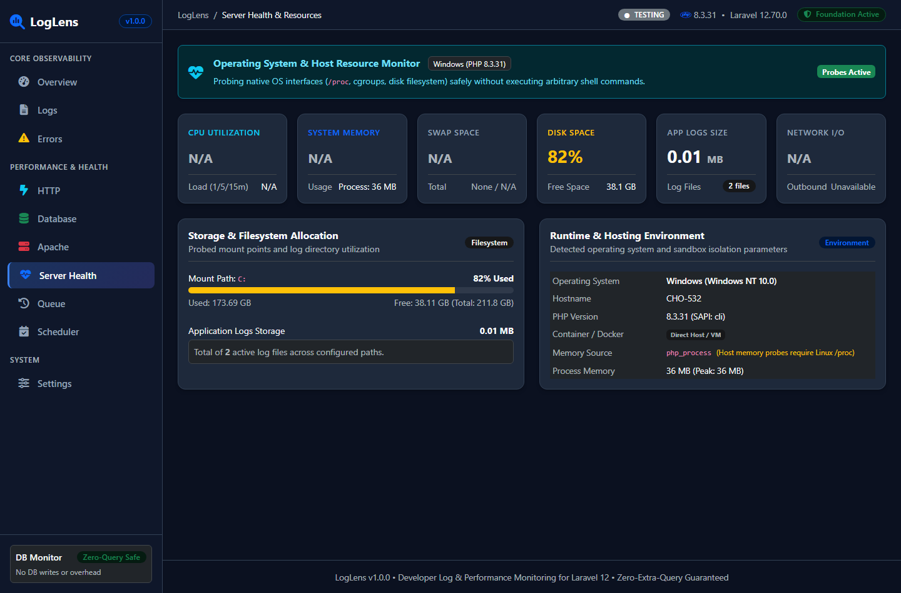
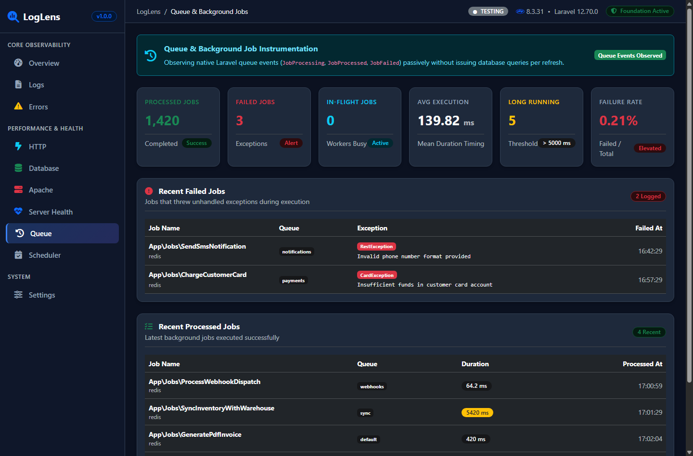
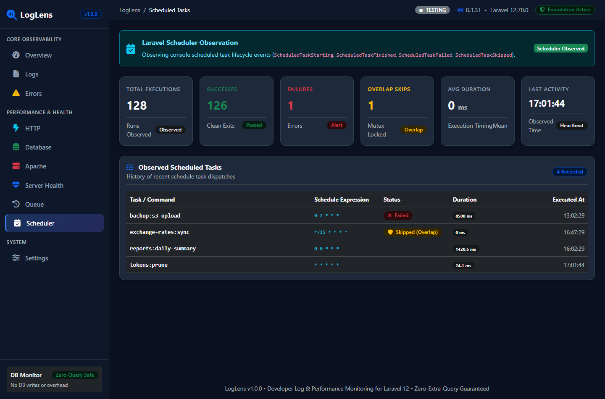
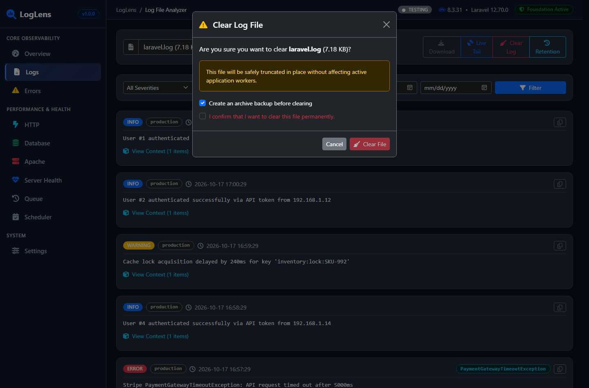

🔍 LogLens Monitoring — বিস্তারিত ইউজার ম্যানুয়াল
লারাভেল অ্যাপ্লিকেশনের জন্য লাইটওয়েট, জিরো-কুয়েরি এবং ফুল-স্ট্যাক মনিটরিং ড্যাশবোর্ড হ্যান্ডবুক।
১. ভূমিকা ও আর্কিটেকচারাল মূলনীতি
LogLens কেন অনন্য এবং কীভাবে কাজ করেLogLens হলো লারাভেল ডেভেলপার ও ডেভঅপস ইঞ্জিনিয়ারদের জন্য তৈরি করা একটি রিয়েল-টাইম অ্যাপ্লিকেশন লগ অ্যানালাইজার এবং ফুল-স্ট্যাক পারফরম্যান্স মনিটরিং প্ল্যাটফর্ম। এটি Laravel 10, 11, 12, এবং 13 ভার্সনের সাথে শতভাগ কম্প্যাটিবল।
মনিটরিংয়ের জন্য অ্যাপ্লিকেশনের ডাটাবেসে কোনো বাড়তি SQL কুয়েরি চালানো হয় না। এটি সম্পূর্ণ প্যাসিভ ইভেন্ট লিসেনারের মাধ্যমে কাজ করে।
আপনার অ্যাপ্লিকেশনের ডাটাবেসে কোনো টেবিল তৈরি করতে হয় না। সব মেট্রিক্স বাউন্ডেড মেমোরি বা অপশনাল রেডিসে জমা থাকে।
Tailwind, Node, Vite বা npm বিল্ডের কোনো ঝামেলা নেই। এটি বিশুদ্ধ Blade, Bootstrap 5 এবং Font Awesome দিয়ে তৈরি।
LOGLENS_ENABLED=false)। আপনার প্রজেক্টের .env ফাইলে LOGLENS_ENABLED=true সেট করলেই ড্যাশবোর্ডটি লাইভ হবে।
২. ড্যাশবোর্ড ওভারভিউ (Overview Dashboard)
রুট:/loglens
ড্যাশবোর্ড ওভারভিউ হলো সমগ্র সিস্টেমের কমান্ড সেন্টার। এখান থেকে একসাথে অ্যাপ্লিকেশন লগ, ডাটাবেস পারফরম্যান্স, HTTP ট্রাফিক, সার্ভার রিসোর্স এবং সক্রিয় অ্যালার্টগুলোর সারসংক্ষেপ এক নজরে দেখা যায়।

পেজের মূল উপাদান ও কার্ডসমূহ
| উপাদান / কার্ড | বিবরণ ও কার্যকারিতা | প্রদর্শিত তথ্য |
|---|---|---|
| Environment Badge | অ্যাপ্লিকেশন বর্তমানে কোন পরিবেশে চলছে তা নির্দেশ করে (Local, Staging, Testing, Production)। | TESTING বা PRODUCTION |
| Log Files & Total Size | storage/logs/ ফোল্ডারে মোট কয়টি লগ ফাইল আছে এবং তাদের সর্বমোট ডিস্ক সাইজ। |
যেমন: 2 files (1.1 MB) |
| HTTP Traffic Snapshot | অ্যাপ্লিকেশনে আসা সর্বমোট রিকোয়েস্ট, গড় রেসপন্স টাইম এবং স্লো রিকোয়েস্টের অনুপাত। | Total Requests, Avg Latency (ms), p95/p99 |
| Database Observed Queries | প্যাসিভভাবে ট্র্যাক করা কুয়েরির সংখ্যা এবং স্লো কুয়েরি কাউন্টার। | Strict Mode (0 Extra Queries) গ্যারান্টি |
| Server Resource Widget | সার্ভারের CPU ব্যবহার, RAM ইউটিলাইজেশন এবং রুট ডিস্কের খালি জায়গা। | রিয়েল-টাইম পার্সেন্টেজ গেজ ও প্রগ্রেস বার |
এই পেজের অ্যাকশন ও কন্ট্রোলসমূহ
| অ্যাকশন / বাটন | কীভাবে কাজ করে | প্রয়োজনীয় পারমিশন |
|---|---|---|
| Auto-Refresh Interval | ড্যাশবোর্ড ডেটা স্বয়ংক্রিয়ভাবে কত সেকেন্ড পর পর রিফ্রেশ হবে তা ড্রপডাউন থেকে নির্বাচন করা যায় (5s, 10s, 30s, Manual)। | সাধারণ ভিউয়ার পারমিশন |
| Quick Module Jump | যেকোনো স্পেসিফিক কার্ডে ক্লিক করলে সরাসরি সংশ্লিষ্ট মডিউলে (যেমন Logs, HTTP, DB) নিয়ে যাবে। | মডিউল স্পেসিফিক অথোরাইজেশন |
৩. লগ ফাইল অ্যানালাইজার ও লাইভ টেইল (Log Viewer)
রুট:/loglens/logs
লারাভেলের Monolog ফাইলগুলো ব্রাউজ, সার্চ, ফিল্টার এবং লাইভ স্ট্রিম করার জন্য এই পেজটি ডিজাইন করা হয়েছে। এটি বাউন্ডেড স্ট্রিমিং রিডার ব্যবহার করে, যার ফলে ১০০ মেগাবাইটের বেশি বড় লগ ফাইলও মেমরি ক্র্যাশ ছাড়া মুহূর্তের মধ্যে পড়া সম্ভব।

ফিল্টারিং ও সার্চিং টুলস
- লগ ফাইল সিলেক্টর ড্রপডাউন:
laravel.log,worker.logবা ডেইলি লগ ফাইলগুলোর যেকোনোটি নির্বাচন করা যায়। ফাইলের পাশে সাইজ এবং লাস্ট মডিফাইড সময় দেখা যায়। - লগ লেভেল ফিল্টার পিলস: সব লেভেল (ALL) অথবা নির্দিষ্ট লেভেল যেমন ERROR, WARNING, INFO, DEBUG, EMERGENCY ফিল্টার করা যায়।
- লাইভ সার্চ বক্স: এক্সেপশনের নাম, ইউজার আইডি, আইপি অ্যাড্রেস বা স্ট্যাকট্রেসের যেকোনো কি-ওয়ার্ড টাইপ করলেই ইনস্ট্যান্ট ফিল্টার হয়।
- লাইন লিমিট ড্রপডাউন: এক পেজে কতগুলো লাইন দেখতে চান (50, 100, 250, 500) তা সেট করা যায়।
সকল অ্যাকশন ও বাটনের কার্যপদ্ধতি
| অ্যাকশন বাটন | কার্যপদ্ধতি ও ব্যাকগ্রাউন্ড প্রসেস | নিরাপত্তা স্তর |
|---|---|---|
| Download Log | সম্পূর্ণ লগ ফাইলটি ব্রাউজারে নিরাপদ স্ট্রিমিংয়ের মাধ্যমে ডাউনলোড করে। কোনো পাথ ট্রাভার্সাল (../) সুযোগ নেই। |
রিড পারমিশন (Read Only) |
| Live Tail Toggle | চালু করলে প্রতি ২ সেকেন্ড পর পর স্বয়ংক্রিয়ভাবে নতুন আসা লগ লাইনগুলো পেজে যুক্ত হয় এবং স্ক্রিন অটো-স্ক্রোল করে নিচে নিয়ে যায়। | কোনো সার্ভার লোড নেই |
| Clear File | লগ ফাইলটিকে মুছে না ফেলে নিরাপদে এর সাইজ ০ বাইট (Truncate) করে দেয়। এটি ক্লিক করলে একটি Destructive Confirmation Modal পপআপ ওপেন হবে। | Destructive Auth + Confirmation Required |
| Retention Cleanup | কনফিগারেশনে নির্ধারিত দিনের চেয়ে পুরোনো লগ ফাইলগুলো প্রিভিউ করে এক ক্লিকে ডিলিট করার অপশন দেয়। | Destructive Authorization |
| Stack Trace Accordion | এরর লাইনের পাশে অ্যারো আইকনে ক্লিক করলে সম্পূর্ণ পিএইচপি স্ট্যাকট্রেস সুন্দর হাইলাইটেড ফরম্যাটে খুলে যাবে। | XSS সুরক্ষিত ও অটো-এসকেপড |
৪. এরর অ্যানালাইসিস ও গ্রুপ ফিঙ্গারপ্রিন্টিং (Error Analysis)
রুট:/loglens/errors
লগ ফাইলে বারবার একই এরর হাজার বার রেকর্ড হলেও ডেভেলপারদের পক্ষে বোঝা কঠিন হয় কয়টি আসল বাগ রয়েছে। LogLens একটি SHA-256 স্মার্ট ফিঙ্গারপ্রিন্ট ইঞ্জিন ব্যবহার করে এরর মেসেজের পরিবর্তনশীল অংশ (যেমন: ইউজার আইডি, টাইমস্ট্যাম্প, মেমোরি অ্যাড্রেস) বাদ দিয়ে একই ধরনের এররগুলোকে এক ছাতার নিচে গ্রুপ করে।

টেবিলের কলামসমূহের অর্থ
- Occurrences (বারসংখ্যা): এই নির্দিষ্ট বাগটি মোট কতবার ঘটেছে (যেমন: 45 times)।
- Exception & Message: এক্সেপশনের ক্লাস নাম (যেমন:
PDOException,StripePaymentException) এবং এরর সারসংক্ষেপ। - Location: প্রোজেক্টের কোন ফাইল এবং কত নম্বর লাইনে সমস্যাটি হয়েছে (যেমন:
OrderController.php:48)। - First Seen / Last Seen: এররটি সর্বপ্রথম কখন দেখা গিয়েছিল এবং সর্বশেষ কখন ঘটেছে।
৫. HTTP পারফরম্যান্স ও ল্যাটেন্সি মেট্রিক্স (HTTP Monitoring)
রুট:/loglens/http
আপনার লারাভেল এপিআই বা ওয়েব রুটের রেসপন্স টাইম, ট্রাফিক ভলিউম এবং এরর রেট ট্র্যাক করার জন্য এটি একটি নিবেদিত মনিটরিং পেজ। এটি প্রতিটি রিকোয়েস্টে একটি ইউনিক X-Correlation-ID যুক্ত করে।

ল্যাটেন্সি পার্সেন্টাইল (p50, p95, p99) কেন জরুরি?
সাধারণ গড় (Average) অনেক সময় সঠিক চিত্র তুলে ধরে না। কারণ ১০০০টি ফাস্ট রিকোয়েস্টের মধ্যে ১টি খুব স্লো রিকোয়েস্ট থাকলে গড় মান বিকৃত হতে পারে।
- Median (p50): ৫০% সাধারণ ইউজারের ক্ষেত্রে সাইট কত দ্রুত কাজ করছে।
- p95 Latency: ৯৫% ইউজার এই সময়ের চেয়ে দ্রুত রেসপন্স পাচ্ছে। শুধুমাত্র টপ ৫% ইউজার এর চেয়ে বেশি সময় ব্যয় করছে।
- p99 Latency: ৯৯% ইউজারের সন্তুষ্টির পরিমাপক। এটি অ্যাপ্লিকেশনের সবচেয়ে স্লো ১% প্রান্তিক রিকোয়েস্টকে নির্দেশ করে।
স্ট্যাটাস কোড ডিস্ট্রিবিউশন ও স্লো রুট টেবিল
- 2xx, 3xx, 4xx, 5xx চার্ট: ট্রাফিকের মধ্যে কত শতাংশ সফল (2xx), কত শতাংশ রিডাইরেক্ট (3xx), কত শতাংশ ক্লায়েন্ট এরর (4xx), এবং কত শতাংশ সার্ভার ক্র্যাশ (5xx)।
- Top Slow Routes Table: যেসব রুটের রেসপন্স টাইম কনফিগার করা থ্রেশহোল্ড (যেমন
>500ms) অতিক্রম করে, সেগুলো স্বয়ংক্রিয়ভাবে এই টেবিলে চিহ্নিত হয়।
৬. ডাটাবেস কুয়েরি প্রফাইল ও N+1 ডিটেকশন (Database Monitoring)
রুট:/loglens/database
লারাভেলের নেটিভ DB::listen ইভেন্টকে প্যাসিভভাবে শুনে অ্যাপ্লিকেশনের সব SQL কুয়েরি পর্যবেক্ষণ করা হয়। LogLens নিজে কোনো অতিরিক্ত SQL কোয়েরি তৈরি করে না, ফলে প্রোডাকশন ডাটাবেসে ০% ওভারহেড নিশ্চিত হয়।

সিকিউর কুয়েরি নরমালাইজেশন ও বাইন্ডিংস মাস্কিং
নিরাপত্তার স্বার্থে ইউজারের পাসওয়ার্ড, টোকেন বা সেনসিটিভ তথ্য কখনোই মনিটরিং স্ক্রিনে প্রদর্শিত হয় না। প্রতিটি SQL স্টেটমেন্ট নরমালাইজ করে সংখ্যা ও স্ট্রিংকে ? দিয়ে রিপ্লেস করা হয়:
-- আসল কুয়েরি:
SELECT * FROM users WHERE email = 'secret@user.com' AND role_id = 4;
-- LogLens নরমালাইজড ফিঙ্গারপ্রিন্ট:
SELECT * FROM `users` WHERE `email` = ? AND `role_id` = ?;N+1 কুয়েরি হিওরিস্টিক অ্যালার্ট
যদি একই HTTP রিকোয়েস্টের ভেতর একই প্যাটার্নের কুয়েরি বারবার লুপ আকারে এক্সিকিউট হয় (যেমন: প্রতিটি ইউজারের প্রোফাইল আলাদা কুয়েরি দিয়ে ফেচ করা), তবে LogLens স্বয়ংক্রিয়ভাবে Potential N+1 Alert ফ্লাগ দেখাবে যাতে ডেভেলপাররা with() বা Eager Loading যোগ করতে পারেন।
৭. অ্যাপাচি mod_status লাইভ মনিটরিং (Apache Status)
রুট:/loglens/apache
ওয়েব সার্ভারের লাইভ হেলথ ট্র্যাক করতে অ্যাপাচির mod_status মডিউলের সাথে সংযোগ স্থাপন করে। নিরাপত্তা গ্যারান্টি: কোনো ড্যাশবোর্ড ভিজিটর সরাসরি অ্যাপাচির স্ট্যাটাস ইউআরএলে হিট করতে পারে না। ব্যাকগ্রাউন্ডে একটি শেয়ার্ড ডেমন চলে যা ১-সেকেন্ড ইন্টারভালে স্ন্যাপশট ক্যাশে সেভ করে রাখে।

লাইভ রেট ও ওয়ার্কার স্কোরবোর্ড
- Requests Per Second (RPS): প্রতি সেকেন্ডে অ্যাপাচি কতগুলো নতুন রিকোয়েস্ট প্রসেস করছে।
- Bytes Per Second (BPS): প্রতি সেকেন্ডে নেটওয়ার্ক দিয়ে কত কিলোবাইট ডেটা আদান-প্রদান হচ্ছে।
- Worker Scoreboard: মোট কয়টি ওয়ার্কার বর্তমানে বিজি (Writing, Reading, KeepAlive) এবং কয়টি ওয়ার্কার আইডল (Waiting for connection) অবস্থায় প্রস্তুত আছে।
টার্মিনালে রান করুন:
php artisan loglens:apache-collect (অথবা Supervisor দিয়ে ব্যাকগ্রাউন্ড প্রসেস হিসেবে চালু রাখুন)।
৮. সার্ভার হেলথ ও কন্টেইনার টেলিমেট্রি (Server Health)
রুট:/loglens/server-health
হোস্ট সার্ভারের হার্ডওয়্যার রিসোর্স এবং লিনাক্স ডকার কন্টেইনারের মেমোরি লিমিট পর্যবেক্ষণ করে। নিরাপত্তা নীতি: এটি কোনো ইউজার ইনপুট দিয়ে শেল কমান্ড চালায় না। লিনাক্সের /proc/stat, /proc/meminfo এবং sys/fs/cgroup ফাইল সরাসরি পড়ে।

টেলিমেট্রি মেট্রিক্সের তালিকা
- CPU Load Average: বিগত ১ মিনিট, ৫ মিনিট এবং ১৫ মিনিটের গড় সিস্টেম লোড।
- RAM & Swap Allocation: সর্বমোট মেমোরি, ব্যবহৃত মেমোরি, ফ্রি স্পেস, এবং সোয়াপ মেমোরি ব্যবহার।
- Disk Mount Allocation: সার্ভারের রুট পার্টিশন (
/) বা মাউন্ট পয়েন্টগুলোতে কত জিবি খালি আছে এবং ফুল হওয়ার ঝুঁকি আছে কি না। - Docker Cgroups v1 & v2: যদি অ্যাপটি ডকার কন্টেইনারে চলে, তবে কন্টেইনারের জন্য নির্ধারিত আসল মেমোরি সিলিং ট্র্যাক করে।
৯. কিউ ব্যাকগ্রাউন্ড জব টেলিমেট্রি (Queue Monitoring)
রুট:/loglens/queue
লারাভেলের ব্যাকগ্রাউন্ড ওয়ার্কারদের ট্র্যাক করার জন্য নিবেদিত ড্যাশবোর্ড। কিউতে প্রসেস হওয়া জব, ব্যর্থ হওয়া জব (Failed Jobs), এবং অস্বাভাবিক সময় নেওয়া জবগুলো (Long-running Jobs) পর্যবেক্ষণ করা যায়।

লং-রানিং জব ও ফেইল্ড জব শনাক্তকরণ
- Long-Running Threshold: ডিফল্টভাবে যেসব জব সম্পন্ন হতে ৫ সেকেন্ডের বেশি সময় নেয় (
>5000ms), সেগুলো স্বয়ংক্রিয়ভাবে লং-রানিং হিসেবে মার্ক করা হয়। - Failed Job Diagnostics: কোনো জব ফেইল করলে কোন এক্সেপশন হয়েছে (
StripeCardException,TimeoutException) এবং কোন কিউতে ঘটেছে তা সরাসরি প্রদর্শন করে।
১০. কনসোল শিডিউলার মনিটর (Scheduler Observability)
রুট:/loglens/scheduler
লারাভেলের শিডিউল করা ক্রন জবগুলো (routes/console.php বা Kernel.php) সময়মতো রান হচ্ছে কি না এবং কোনো টাস্ক ফেইল বা স্কিপ হয়েছে কি না তা পর্যবেক্ষণ করে।

মিউটেক্স ওভারল্যাপ ডিটেকশন (withoutOverlapping)
অনেক সময় একটি শিডিউল করা জব শেষ হতে অতিরিক্ত সময় লাগে, যার ফলে পরবর্তী শিডিউলের সময় লারাভেলের withoutOverlapping() লক এটিকে স্কিপ করে দেয়। LogLens এই ঘটনাগুলোকে চিহ্নিত করে এবং Mutex Overlap Skipped ওয়ার্নিং প্রদর্শন করে যাতে সার্ভার হ্যাং হওয়া এড়ানো যায়।
১১. সিকিউরিটি ও ডেস্ট্রাক্টিভ অ্যাকশন কনফার্মেশন
নিরাপত্তা স্তর ও পারমিশন নীতিলগ ফাইল ট্রাঙ্কেট করা (Clear) বা রিটেনশন ক্লিনআপ করার মতো পরিবর্তনশীল অ্যাকশনগুলো অত্যন্ত সংবেদনশীল। অসাবধানতাবশত যাতে কোনো গুরুত্বপূর্ণ অডিট লগ মুছে না যায়, তার জন্য LogLens-এ মাল্টি-টিয়ার সিকিউরিটি গার্ড যুক্ত রয়েছে।

৪-স্তরের ডেস্ট্রাক্টিভ সুরক্ষা চেইন
- কনফিগারেশন গেট:
config/loglens.php-তে'allow_destructive_actions' => trueনা থাকলে ব্যাকএন্ড স্বয়ংক্রিয়ভাবে রিকোয়েস্ট ব্লক করে দেবে (403 Forbidden)। - ডেস্ট্রাক্টিভ কলব্যাক অথোরাইজেশন: সাধারণ অ্যাডমিন দেখতে পারলেও ডিলিট করতে পারবে কি না তার জন্য আলাদা গেট
LogLens::destructiveAuth(...)পাস করতে হবে। - CSRF প্রোটেকশন: সমস্ত স্টেট-চেঞ্জিং এন্ডপয়েন্টে লারাভেলের ভ্যালিড CSRF টোকেন বাধ্যতামূলক।
- UI টু-স্টেপ কনফার্মেশন: মোডালে থাকা "I understand this action is irreversible" চেকবক্সে টিক না দেওয়া পর্যন্ত লাল রঙের "Yes, Clear File" বাটনটি ডিজেবল থাকবে।
১২. .env কনফিগারেশন চেকলিস্ট ও রেফারেন্স
প্রোডাকশন রেডি পরিবেশ প্রস্তুতকরণআপনার প্রোজেক্টের .env ফাইলে নিচের ভেরিয়েবলগুলো দিয়ে প্রতিটি মডিউল আলাদাভাবে কন্ট্রোল করা যায়:
# ==========================================
# LogLens Master Switch & Configuration
# ==========================================
LOGLENS_ENABLED=true
LOGLENS_PATH=loglens
# Monitoring Modules Toggle
LOGLENS_DB_MONITORING=true
LOGLENS_HTTP_MONITORING=true
LOGLENS_APACHE_MONITORING=false
LOGLENS_SYSTEM_MONITORING=true
LOGLENS_QUEUE_MONITORING=true
LOGLENS_SCHEDULER_MONITORING=true
LOGLENS_ALERTS_ENABLED=true
# Security & Destructive Actions
LOGLENS_ALLOW_DESTRUCTIVE=false
# Thresholds
LOGLENS_SLOW_REQUEST_THRESHOLD_MS=1000
LOGLENS_SLOW_QUERY_THRESHOLD_MS=500
LOGLENS_LONG_RUNNING_JOB_THRESHOLD_MS=5000AppServiceProvider-এ অ্যাক্সেস রেস্ট্রিকশন কোড
use MehrabHossain\LogLens\Facades\LogLens;
public function boot(): void
{
// ড্যাশবোর্ড দেখার অনুমতি (Read Only)
LogLens::auth(function ($request) {
return app()->environment('local') ||
in_array($request->user()?->email, [
'admin@yourdomain.com',
'devops@yourdomain.com',
]);
});
// লগ ফাইল মোছার অনুমতি (Destructive Action)
LogLens::destructiveAuth(function ($request) {
return in_array($request->user()?->email, [
'lead-architect@yourdomain.com',
]);
});
}